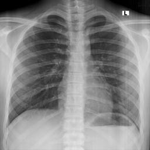
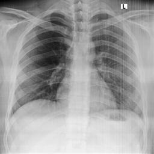
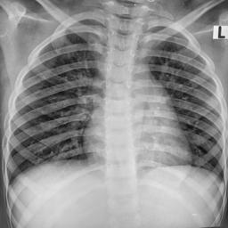

The Convergence of AI Technologies
This interactive report consolidates key concepts driving modern Artificial Intelligence. The landscape has rapidly evolved from structured perception (CNNs) to unbounded creation (Generative AI) and massive generalized understanding (Foundation Models). Explore the modules to understand the mechanics, growth trajectories, and critical ethical considerations of these technologies.
Computer Vision
How Convolutional Neural Networks revolutionized machines' ability to classify and detect objects within images.
Generative AI
The shift from predictive to creative AI, covering GANs, Diffusion Models, and their multi-modal applications.
Foundation Models
The architecture behind LLMs. Understanding Self-Attention, parameter scaling, and the Transformer revolution.
Ethics & Challenges
Navigating bias, copyright, hallucinations, and the environmental footprint of training massive AI models.
Healthcare AI & Radiomics
Exploring multi-dimensional medical data curation, biostatistics, advanced image segmentation, and specialized multi-modal medical LLMs (MedGemma, LLaVA-Med).
CNNs & Image Classification
Convolutional Neural Networks (CNNs) are specialized algorithms designed to process pixel data. They mathematically simulate the human visual cortex, learning to recognize simple edges in early layers and complex patterns (like faces or cars) in deeper layers. This section tracks their historical accuracy breakthroughs and structural anatomy.
ImageNet Top-5 Accuracy Progression (%)
The "Deep Learning Revolution" was sparked when AlexNet dramatically outperformed traditional methods in 2012.
Interactive Architecture Flow
Hover over the blocks to understand the data transformation process in a standard image classification pipeline.
Raw Pixels (RGB)
Extracts local features using filters
Reduces spatial dimensions & computes
Maps features to class probabilities
Training & Evaluation in CNNs
Loss Functions
-
Cross-Entropy Loss:
Measures difference between predicted probability and true label.L = - Σ y log(p)
-
Focal Loss:
Focuses more on hard examples, reduces impact of easy ones.FL = (1 − p)^γ log(p)
-
Dice Loss:
Maximizes overlap between predicted and true regions.Dice = 2|X∩Y| / (|X| + |Y|)
Evaluation Metrics
-
Accuracy:
Correct predictions over total samples.(TP + TN) / Total
-
Precision:
How many predicted positives are correct.TP / (TP + FP)
-
Recall:
How many actual positives are captured.TP / (TP + FN)
-
F1 Score:
Balance between precision and recall.2PR / (P + R)
Metric Intuition (Visual)
Transfer Learning Strategy
ROC & Precision-Recall Curves
ROC shows trade-off between TPR and FPR, while Precision-Recall focuses on performance in imbalanced datasets.
Interactive Confusion Matrix
85
15
10
90
Training Simulation (Epoch vs Loss)
Overfitting vs Underfitting
Underfitting
Model is too simple. Both training and validation loss remain high → poor learning.
Good Fit
Training and validation loss decrease together → model generalizes well.
Overfitting
Training loss decreases but validation loss increases → model memorizes data.
Generative AI
While traditional AI models are trained to classify or predict based on existing data, Generative AI models learn the underlying distribution of the training data to create entirely new, original artifacts. This section breaks down the dominant model architectures and current commercial use case distributions.
Dominant Architectures
Current Enterprise Use Case Distribution
Generative AI: A Visual Journey
Step through key concepts — one infographic at a time

The Probabilistic Shift
Traditional AI defines hard decision boundaries — it answers "which class does this belong to?" Generative AI instead learns the full probability landscape of the training data, enabling it to sample entirely new, valid examples from that distribution. This pivot was made commercially viable by self-supervised pre-training on internet-scale corpora, eliminating the need for expensive human-labelled datasets at scale.

Emergent Zero-Shot Capability
Foundation models develop surprising capabilities that were never explicitly trained — a phenomenon called emergence. At sufficient scale, a model trained purely to predict the next token becomes a reasoner, coder, and translator. Zero-shot transfer means one model serves countless downstream tasks through natural language prompts alone, fundamentally reshaping the economics of AI deployment.

Measured Real-World Impact
Adoption metrics reveal compounding returns: AI-assisted development teams report 30–55% faster delivery cycles, while generative tools in drug discovery compress early-stage molecule screening from years to weeks. Strategic depth of integration — not mere adoption — is the decisive factor between organizations capturing outsized value and those treating GenAI as a novelty.
Transformers & Foundation Models
Introduced in 2017, the Transformer architecture discarded sequential processing (like RNNs) in favor of processing entire sequences simultaneously using an "Attention Mechanism." This allowed for unprecedented parallelization and scaling, giving rise to massive Foundation Models (LLMs) that serve as generalized engines for myriad downstream tasks.
The Scaling Law: Parameter Count Explosion (Log Scale)
Foundation models exhibit emergent capabilities as their parameter count (connections) scales exponentially.
Demystifying Self-Attention
Self-attention allows a model to weigh the importance of different words in a sentence relative to each other, understanding context dynamically. Click a word below to see its simulated attention weights.
🎬 How Large Language Models Work
Start with the short explainer, then scan the animated cards below for the three mechanics that matter most: tokenization, attention, and next-token generation.
AI Challenges & Ethics
As AI capabilities accelerate, the socio-technical risks multiply. Deploying these systems globally requires rigorous evaluation of biases, copyright infringement, susceptibility to generating misinformation (hallucinations), and the immense ecological cost of compute clusters.
Severity Matrix of AI Risks
Mitigation Strategies
Healthcare AI & Clinical Models
Healthcare data is highly complex, requiring rigorous curation before it can be used by AI. This section explores the pipeline from raw multi-dimensional clinical data (0D to 4D) to advanced predictive models, including Radiomics, precise image segmentation, and specialized Medical LLMs.
The Dimensionality of Healthcare Data
Radiomics Data Curation & Analysis Workflow
Radiomics extracts high-dimensional texture features (GLCM, GLSZM) from images to capture tissue heterogeneity invisible to the human eye.
(MRI, CT, PET)
(Masking ROI)
(GLCM, Wavelets)
(ML/DL)
(Classification)
Handling Data Inconsistencies
| Strategy | Definition & Example |
|---|---|
| Standardization | Converting formats/units into a unified form. Ex: Converting Glucose mg/dL to mmol/L. |
| Normalization | Adjusting data scale/distribution to remove bias. Ex: Min-Max scaling, Z-scores. |
| Harmonization | Merging aligned data from disparate sources. Ex: Combining EHRs from 5 different hospitals. |
Medical Image Segmentation
Example: Labeling all cancerous tissue in a slide with one color, without differentiating individual tumors.
Healthcare LLMs & The Future of Agentic AI
Language models are evolving into multi-modal systems capable of processing text, 3D volumes, and clinical notes simultaneously.
Specialized Medical Models
- MedGemma: Google's multimodal AI capable of 3D CT/MRI interpretation and whole-slide histopathology.
- Me-LLaMA: Foundation model instruction-tuned on large clinical/biomedical datasets.
- LLaVA-Med: Language-and-vision assistant for biomedical images.
Agentic AI & Challenges
The frontier is Agentic AI: models that don't just answer prompts, but act autonomously in feedback loops, utilizing external "Tool Libraries" (like vector databases) to achieve goals.
Key Risk: Deploying these requires mitigating Catastrophic Forgetting (losing prior knowledge during fine-tuning) and clinical hallucinations.
🫁 Live AI Demo: Tuberculosis Detection
Live Demo: huggingface.co/spaces/shubhlokhugging/TB-Chest-Xray-Classification
An AI-powered end-to-end pipeline for classifying chest X-rays as Normal or Tuberculosis, combining deep learning with explainable AI and an interactive web deployment. Built with EfficientNet-B0 transfer learning, Grad-CAM visual explainability, and a Gradio web interface deployed on Hugging Face Spaces.
- Upload a posterior-anterior (PA) chest X-ray to get an instant AI-powered classification.
- Grad-CAM highlights the regions of the lung driving the model's decision.
- A downloadable diagnostic DOCX report is generated for each scan.
📂 Sample X-Ray Images — drag one into the upload area below:

✓ Normal
✓ Normal
⚠ TB PositiveDrag a sample image here
or drop an X-ray file from your computer
Analyzing X-ray with AI...
AI-Driven Digital Therapeutics Solution Stack
Modern healthcare platforms are not powered by a single AI technology — they are layered stacks where each tier delegates to the most appropriate model class. This section maps the five functional layers of a digital therapeutics architecture to the AI disciplines explored throughout this report.

The interface layer is where LLMs earn their place as conversational agents — powering symptom triage chatbots, natural language search, and dynamic report narration. Generative AI enables adaptive UI copy that adjusts clinical complexity based on whether the user is a patient or a specialist, without requiring separate application builds.
Retrieval-Augmented Generation (RAG) pipelines built on transformer encoders let clinicians query vetted medical literature in natural language — the system retrieves, ranks, and synthesises evidence rather than hallucinating citations. Generative models then format findings to the right reading level and channel (push notification vs. clinical note vs. patient summary).
CNNs underpin wearable signal classification — detecting arrhythmias from ECG patches or fall risk from accelerometer streams. Transformer-based clinical decision support (CDSS) models integrate heterogeneous inputs (labs, vitals, imaging) to predict deterioration risk hours earlier than rule-based systems, allowing proactive rather than reactive intervention.
Radiomic feature extraction via CNNs encodes thousands of quantitative imaging biomarkers that conventional analytics miss. Explainability layers — gradient-weighted class activation maps (Grad-CAM) and counterfactual explanations generated by language models — translate model confidence scores into auditable clinical reasoning, satisfying regulatory requirements like FDA's AI/ML action plan.
Edge-deployed CNNs perform real-time image quality assessment and auto-segmentation at point-of-capture — rejecting blurry scans before they enter the pipeline. Transformer-based entity extraction from clinical notes and discharge summaries populates structured EHR fields automatically, cutting manual documentation burden while maintaining FHIR R4 / HL7 interoperability standards.
Cross-cutting enablers (Security, Interoperability, MLOps) apply to every layer — explore the tab for governance considerations.